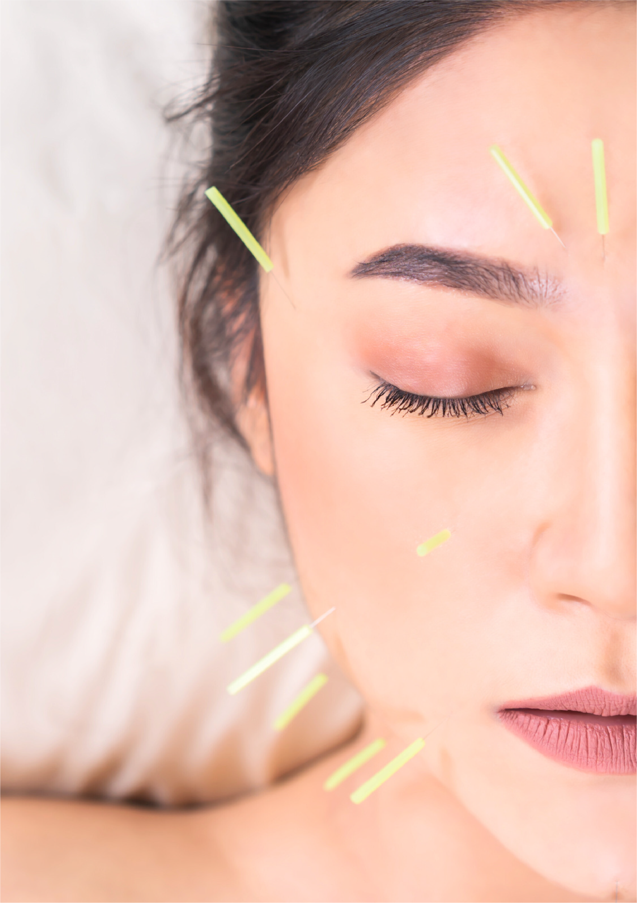
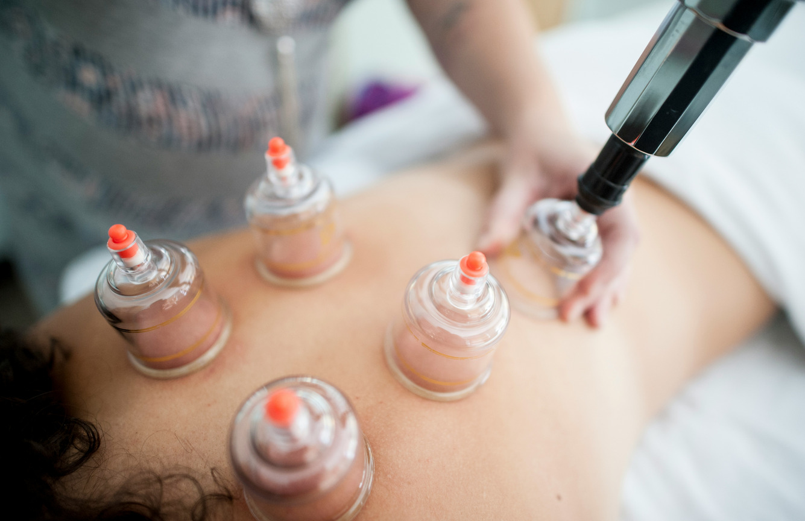
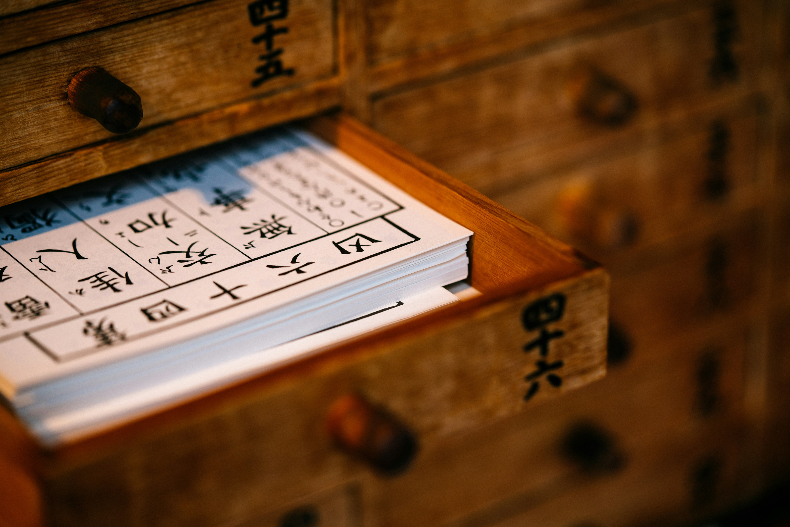

Rooted in tradition.
Proven by results.根植传统
疗效为证
Get In Touch →联系我们 →
We are healers.
We restore balance so bodies can heal, minds can rest, and energy can flow freely.
We support patients. Patients on their journey — from chronic pain to lasting wellness, from stress to clarity.
Whether it’s helping a mother sleep, an elder move with ease, or a professional find calm, our work fosters healthier lifestyles.我们是治愈者。
我们恢复身体的平衡,让身体康复、心灵安宁、气血通畅。
我们陪伴每一位病人。 陪伴他们的康复之旅——从慢性疼痛到长久健康,从压力焦虑到清明自在。
无论是帮助母亲安然入睡、长者行动自如,还是让忙碌的都市人重获宁静,我们的工作是滋养更健康的生活方式。
→ Featured Treatments特色疗法

With burning herbs near the skin, it stirs the qi to flow within.艾草温熏近肌肤,气血调畅通经络。

A breath of herbs, the mind finds peace, as scented oils bring calm release.一缕香草,心归宁静,精油舒缓,身心自安。

With gentle cups that lift and glide, they draw out tension trapped within.轻罐提滑之间,郁结随之而散。
A skilled adjustment, snap and spin, realigns the strength within.巧手一整,骨正筋柔,力从中生。
→ Materia Medica本草纲目
草本 · Cao Ben. The living library of Chinese herbal medicine — roots, barks, flowers and fungi gathered across centuries of practice. Every remedy we prescribe is drawn from this tradition, chosen for the balance it restores.草本。 中华本草的活字典——根、皮、花、菌,取自千年沉淀的智慧。每一味药,皆源自这份传统,只为恢复身体的平衡。
→ The Experience就诊体验
Healing with Excellence. We approach Traditional Chinese Medicine with care and precision, delivering results that go beyond expectations.卓越疗愈。 我们以细致与精准对待中医药,带来超越期待的疗效。
Care-Centered Relationships. We build trust through open communication and genuine collaboration with every patient.以关怀为本。 我们以坦诚沟通与真诚协作,与每一位病人建立信任。
